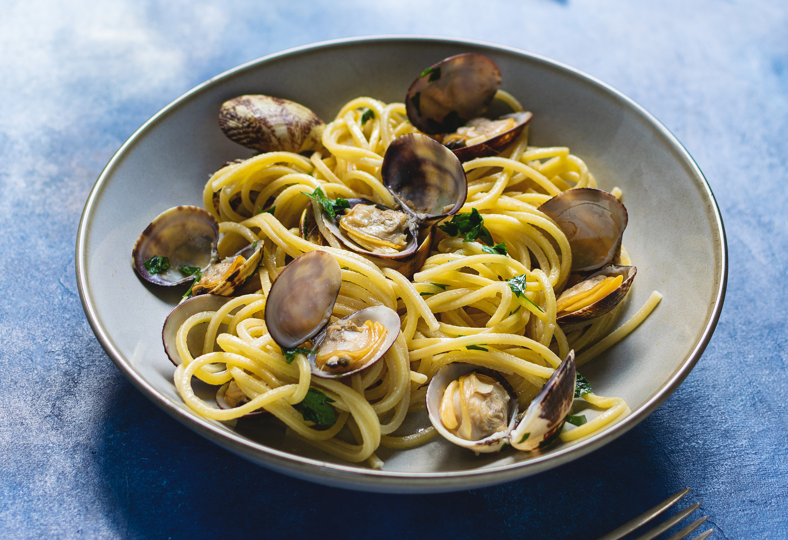

I Spaghetti alle Vongole

Descrizione
Una ricetta semplicissima dal meraviglioso sapore di mare, che nasconde qualche piccolo segreto
per una perfetta riuscita. Vongole polpose, spolverata di prezzemolo e la deliziosa cremina
che si crea naturalmente con l'amido della pasta, fanno degli spaghetti
alle vongole una vera prelibatezza.
Ingredienti
- Spaghetti grossi
- Vongole
- Aglio
- Olio extravergine d'oliva
- Sale fino
- Prezzemolo
- Pepe nero
- Sale grosso per le vongole
Come preparare i Spaghetti alle Vongole
- Per preparare gli spaghetti alle vongole, cominciate dalla pulizia. Assicuratevi che non
ci siano gusci rotti o vuoti, andranno scartati. Passate poi a batterle contro il lavandino,
o eventualmente su un tagliere. Questa operazione è importante per verificare che non ci
sia sabbia all'interno: le bivalve sane resteranno chiuse, quelle piene di sabbia invece
si apriranno. Poi ponete le vongole in una ciotola e sciacquatele. Aggiungete il sale
grosso.
- Lasciate in ammollo le vongole per 2-3 ore. Trascorso il tempo le vongole avranno spurgato
eventuali residui di sabbia, scolatele e sciacquatele. In un tegame mettete a scaldare
un po' d'olio. Poi aggiungete uno spicchio d'aglio e lasciatelo imbiondire.
- Tuffate quindi le vongole nel tegame caldo. Chiudete con il coperchio e lasciate cuocere
per qualche minuto a fiamma alta. Le vongole si apriranno con il calore, quindi agitate di
tanto in tanto il tegame finché non si saranno completamente dischiuse.
Nel frattempo tritate finemente il prezzemolo.
- Non appena tutte le vongole saranno aperte spegnete subito il fuoco, altrimenti le vongole
cuoceranno troppo. Cuocete gli spaghetti in abbondante acqua leggermente salata, per metà
del tempo di cottura indicato sulla confezione. Nel frattempo filtrate le vongole,
posizionando una ciotola al di sotto e ricordandovi di eliminare l'aglio.
- In questo modo raccoglierete l'acqua di cottura delle vongole nella ciotola. Trasferitela
nel tegame dove avevate cotto le vongole e non appena gli spaghetti saranno pronti
scolateli, tenendo da parte l'acqua di cottura. Trasferiteli nel tegame con il condimento.
- Aggiungete un mestolo di acqua di cottura, regolate di pepe e terminate la cottura
degli spaghetti, aggiungendo altra acqua al bisogno. Quando saranno
pronti aggiungete le vongole.
- Unite anche il prezzemolo 19, saltate brevemente e servite
subito i vostri spaghetti con le vongole.